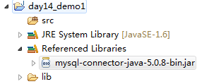
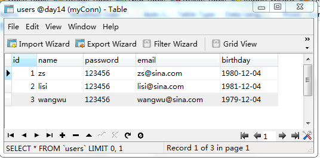
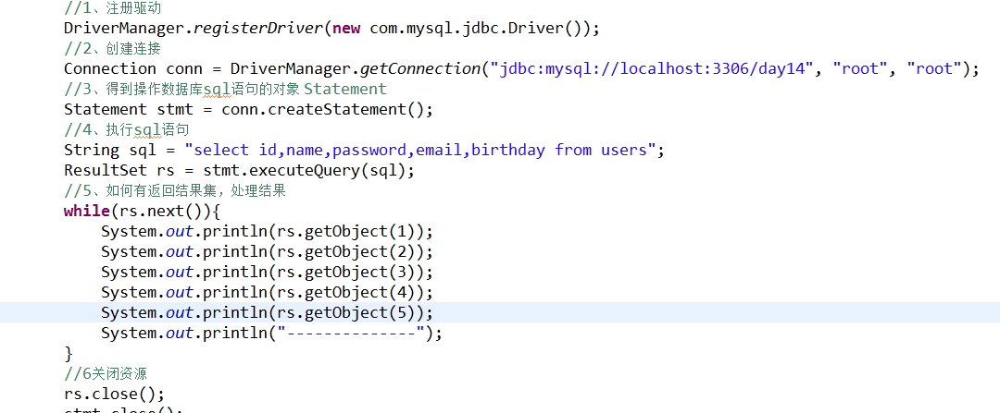
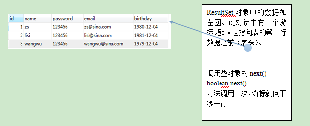
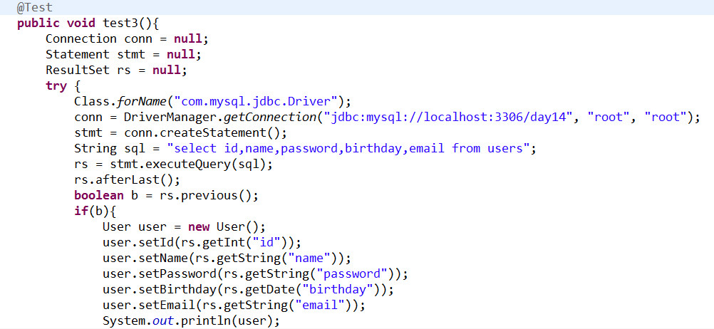
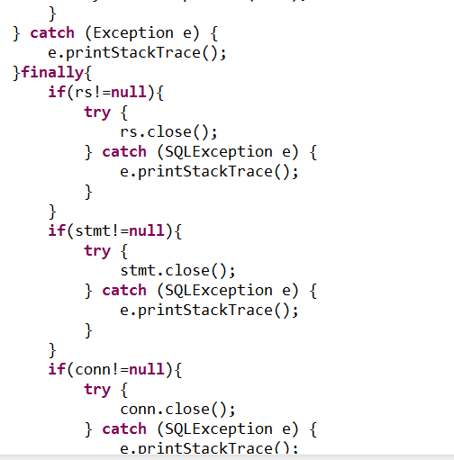
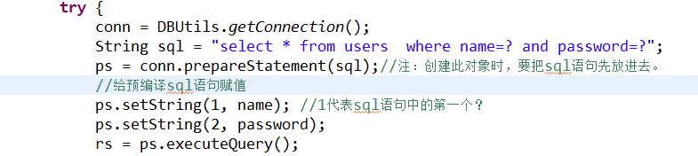
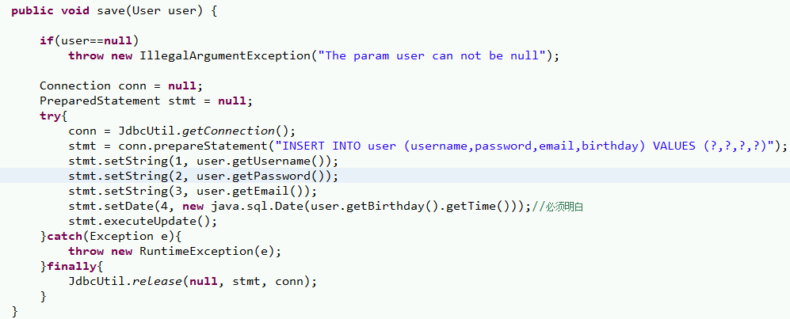

今天主要分享一下JDBC规范、如何在程序中如何使用JDBC还有JDBC中常用的类和接口。
JDBC概述
简介
Java数据库连接，（Java Database Connectivity，简称JDBC）是Java语言中用来规范客户端程序如何来访问数据库的应用程序接口，提供了诸如查询和更新数据库中数据的方法。JDBC也是Sun Microsystems的商标。我们通常说的JDBC是面向关系型数据库的。
为什么要使用JDBC？
JDBC:java database connectivity SUN公司提供的一套操作数据库的标准规范。
JDBC与数据库驱动的关系：接口与实现的关系。
JDBC规范（掌握四个核心对象）：
DriverManager:用于注册驱动
Connection: 表示与数据库创建的连接
Statement: 操作数据库sql语句的对象
ResultSet: 结果集或一张虚拟表
开发第一个JDBC的程序的准备：
- 首先说一下JDBC规范在哪里？
JDK中:
java.sql下的所有类;
javax.sql下的所有类; - 数据库厂商提供的驱动：jar文件

第一个JDBC程序的开发
实现查询数据库信息在java控制台打印
首先创建数据库与表
1 | $ create database day06; |

接着创建java project项目，添加数据库驱动（Jar包）
这个步骤就不演示了，自己应该会做哦。
实现JDBC的操作
- 1、注册驱动
- 2、创建连接
- 3、得到执行sql语句的Statement对象
- 4、执行sql语句，并返回结果
- 5、处理结果
- 6、关闭资源


JDBC常用类和接口详解
java.sql.Drivermanager类 : 创建连接
a.注册驱动
1
2
3
4
5
6$ DriverManager.registerDriver(new com.mysql.jdbc.Driver());不建议使用
$ 原因有2个：
导致驱动被注册2次。
强烈依赖数据库的驱动jar
解决办法：
使用Class.forName("com.mysql.jdbc.Driver");来进行注册驱动b.与数据库建立连接
1
2
3
4
5
6
7$ static Connection getConnection(String url, String user, String password) 试图建立到给定数据库 URL 的连接
$ getConnection("jdbc:mysql://localhost:3306/day06", "root", "root");
$ URL:SUN公司与数据库厂商之间的一种协议。
jdbc:mysql://localhost:3306/day06
协议 子协议 IP :端口号 数据库
mysql: jdbc:mysql://localhost:3306/day14 或者 jdbc:mysql:///day14（默认本机连接）
oracle: jdbc:oracle:thin:@localhost:1521:sid
java.sql.Connection接口:一个连接
接口的实现在数据库驱动中。所有与数据库交互都是基于连接对象的。
Statement createStatement(); //创建操作sql语句的对象java.sql.Statement接口:操作sql语句，并返回相应的结果的对象()小货车
- 接口的实现在数据库驱动中。用于执行静态 SQL 语句并返回它所生成结果的对象。
- ResultSet executeQuery(String sql) 根据查询语句返回结果集。只能执行select语句。
- int executeUpdate(String sql) 根据执行的DML（insert update delete）语句，返回受影响的行数。
- oolean execute(String sql)此方法可以执行任意sql语句。返回boolean值，表示是否返回ResultSet结果集。仅当执行select语句，且有返回结果时返回true, 其它语句都返回false;
java.sql.ResultSet接口: 结果集（客户端存表数据的对象）
封装结果集的
- 提供一个游标，默认游标指向结果集第一行之前。
- 调用一次next()，游标向下移动一行。
- 提供一些get方法。
- 封装数据的方法
a、 Object getObject(int columnIndex); 根据序号取值，索引从1开始
b、 Object getObject(String ColomnName); 根据列名取值。 - 将结果集中的数据封装到javaBean中
1
2
3
4
5
6
7
8
9
10
11
12
13
14
15
16
17
18
19
20$ java的数据类型与数据库中的类型的关系
byte tityint
short smallint
int int
long bigint
float float
double double
String char varchar
Date date
$ 下面是一些方法：
boolean next() 将光标从当前位置向下移动一行
int getInt(int colIndex) 以int形式获取ResultSet结果集当前行指定列号值
int getInt(String colLabel) 以int形式获取ResultSet结果集当前行指定列名值
float getFloat(int colIndex) 以float形式获取ResultSet结果集当前行指定列号值
float getFloat(String colLabel) 以float形式获取ResultSet结果集当前行指定列名值
String getString(int colIndex) 以String 形式获取ResultSet结果集当前行指定列号值
String getString(String colLabel) 以String形式获取ResultSet结果集当前行指定列名值
Date getDate(int columnIndex);
Date getDate(String columnName);
void close() 关闭ResultSet 对象
可移动游标的方法
1 | boolean next() 将光标从当前位置向前移一行。 |
释放资源
资源有限，正确关闭


SQL注入问题：preparedStatement
- preparedStatement：预编译对象,是Statement对象的子类。
- 特点：
a、性能要高
b、会把sql语句先编译
c、sql语句中的参数会发生变化，过滤掉用户输入的关键字。

补充一个例子：
本文作者：Jack
版权声明：未经授权禁止使用，转载请说明出处！